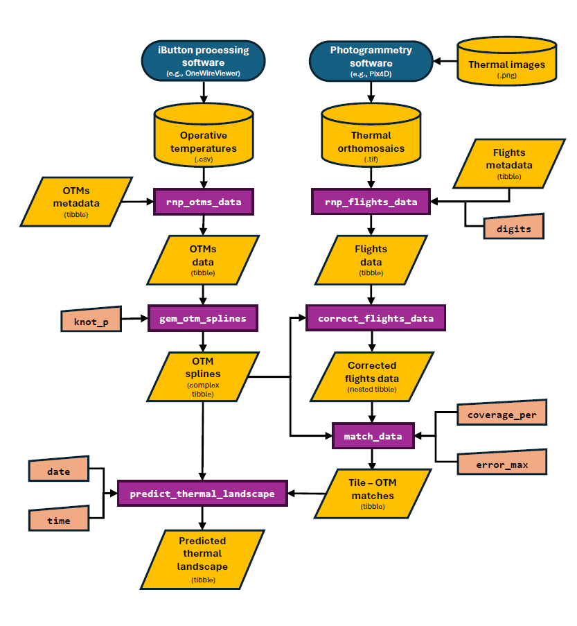

An overview of throne
overview.RmdWelcome to throne! In this vignette, we will provide a
general overview of the aims and functionality of this package as well
as links to subsequent vignettes including details on each of the steps
of the process.
The aim of throne.
The overall aim when using the throne package is to
obtain a spatio-temporally complete prediction of the thermal
landscape of an area of interest. By thermal landscape, we
refer to a data set that includes temperature measurements in a
specified area (i.e., a set of “tiles” described by a unique latitude
and longitude) across multiple moments in time (i.e., years, days all
the way down to minutes). To generate these predictions, the
throne package integrates spatially complete but temporally
discrete thermal data collected via aerial photogrammetry using
thermal imaging drones (hence
throne), with spatially discrete but temporally complete
operative temperature data collected via operative temperature
models (OTMs). Generating spatio-temporally complete thermal
landscapes allows users to obtain a characterization of the thermal
properties of an area of study at an unprecedented level of detail.
Below is an example of the final output of the throne
package, a predicted thermal landscape over an area of study across all
times for an entire day:

The throne workflow
Below is a diagram of the entire workflow of the throne
package. In essence, the entire process is divided into 8
steps that are performed in processing software and in
R:

The steps of the workflow are discussed in the following sections:
1. Collect & process thermal images
The first step is to collect thermal images using a thermal imaging drone. To achieve this, the users will need to:
- Acquire a thermal imaging drone.
- Plan and conduct flights with the thermal imaging drone multiple times over an area of interest.
- Process the thermal imagery using a photogrammetry software to
obtain a thermal orthomosaic (i.e., a
.TIFfile) for each flight.
To achieve this, we have included a step-by-step guide on how to perform each of these steps that also includes recommendations on the kind of drone and photogrammetry software to use.
2. Collect OTM data
The second step is to collect operative temperature model (OTM) data. We elaborate on the concept here but in short, an operative temperature is a measurement of temperature performed inside of an object (i.e., a model) with zero heat capacity, the same size, shape and radiation properties as an organism of interest. Measuring operative temperatures (as opposed to air or surface temperatures) is critical in order to be able to accurately characterize the thermal environment that an organism of interest is actually experiencing. To collect operative temperature model data we also provide a step-by-step guide that goes through the following steps:
- Build OTMs
- Program temperature loggers (i.e., iButtons) that will be contained inside of the OTM.
- Plan and conduct the deployment of OTMs in the field.
- Recover the OTMs and download the stored data into
.csvfiles.
3. Read & process flight data
The third step is the reading and processing of thermal orthomosaics
(.TIF files that we call “flight data” for simplicity) into
a data structure that can be worked with in the R
environment. This process is achieved through the rnp_flights_data
function of the throne package. In this
vignette we discuss in detail how this function works and we provide
some insights into how to determine the spatial resolution of flights
data via the digits
argument.
4. Read & process OTM data
The fourth step is the reading and processing of the data (in
.csv format) collected by OTMs deployed in the field. To
achieve this, the throne package includes the rnp_otms_data
function which is capable of reading OTM data files regardless of the
formatting. More details on how this function works can be found here.
5. Generate OTM spline models
The fifth step is the generation of cubic spline models from OTM data
which, in the context of the throne package, is performed
by the gen_otm_splines
function. In short, this function will fit a unique cubic spline model
to each OTM for each day it was deployed in the field as a way to obtain
a continuous characterization of its temperature fluctuation. In this
vignette we detail how this function works and we provide some
guidelines on how to choose the appropriate “wiggliness” of the
resulting model through the knot_p
argument
6. Correct flight data
The sixth step will be the correction of flights data using the newly
created spline models using the correct_flights_data
function. The need for this correction stems from the fundamental
difference in the physical properties of the temperature measurements
collected using an IR thermal imaging camera mounted on a drone and
those collected using OTMs. The goal of this correction step is to
transform thermal maps obtained from the flights into operative
temperature maps. The logic of this process and details on how the
correct_flights_data function works are described
extensively in this
vignette
7. Match flight and OTM data
The seventh step of the throne workflow is the matching
of flights and OTM data. The goal of this step, which can be performed
using the match_data
function is to link the thermal dynamics of each of the tiles (i.e.,
unique combination of latitude and longitude values) of the study area
to the thermal dynamics of an OTM. More details on how the matching
process is performed can be found here.
8. Predict thermal landscapes
The last step is the prediction of thermal landscapes which can be
done using the predict_thermal_landscape
function. Combining the OTM spline models with the “matches” data sets,
the predict_thermal_landscape function is able to produce a
thermal landscape of the area of interest for any date and time of day
for as long as the OTMs were deployed and recording in the field. We
discuss the exact process to predict thermal landscapes here
together with some insight on the high predictive accuracy of this
method which we also discuss in the accompanying manuscript.